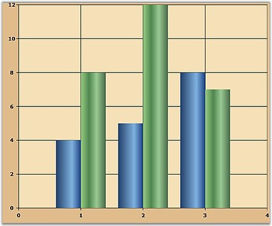

Data to be plotted inside chart is provided by the chart series. Chart Series object is the one that defines the chart type, styles and other customization options to be applied on the chart.
Adding Chart Series
You can add more than one chart series objects to a chart area using simple code snippets as follows.
|
[XAML]
<UserControl.Resources> <LinearGradientBrush x:Key="Series1" EndPoint="1,0.5" StartPoint="0,0.5"> <LinearGradientBrush.GradientStops> <GradientStop Color="#FF1C3D6A" Offset="0"/> <GradientStop Color="#FF345580" Offset="0.164841"/> <GradientStop Color="#FF7AAEDE" Offset="0.642853"/> <GradientStop Color="#FF183C7D" Offset="1"/> </LinearGradientBrush.GradientStops> </LinearGradientBrush>
<LinearGradientBrush x:Key="Series2" EndPoint="0,0.5" StartPoint="1,0.5"> <GradientStop Color="#FF436545" Offset="0"/> <GradientStop Color="#FF89BF75" Offset="0.947"/> <GradientStop Color="#FF498249" Offset="0.673"/> <GradientStop Color="#FF95C78D" Offset="0.365"/> </LinearGradientBrush>
<UserControl.Resources>
<syncfusion:Chart Background="Gray"> <syncfusion:ChartArea> <syncfusion:ChartSeries Data="1,4,2,5,3,8" Interior="{StaticResource Series1}"/> <syncfusion:ChartSeries Data="1,8,2,12,3,7" Interior="{StaticResource Series2}"/> </syncfusion:ChartArea>
</syncfusion:Chart> |
|
[C#]
Chart chart = new Chart(); ChartArea area = new ChartArea(); ChartSeries series1 = new ChartSeries(); ChartSeries series2 = new ChartSeries(); chart.Background = new SolidColorBrush(Colors.Gray); //Add First Series Data Points ChartPointsCollection data = new ChartPointsCollection(); data.Add(new ChartPoint(1, 4)); data.Add(new ChartPoint(2, 5)); data.Add(new ChartPoint(3, 8)); series1.Data = data; series1.Interior = new SolidColorBrush(Colors.Green);
//Add Second Series Data Points ChartPointsCollection data1 = new ChartPointsCollection(); data1.Add(new ChartPoint(1, 8)); data1.Add(new ChartPoint(2, 12)); data1.Add(new ChartPoint(3, 7)); series2.Data = data1; series2.Foreground = new SolidColorBrush(Colors.Blue);
//Add Series in area area.Series.Add(series1); area.Series.Add(series2);
//Add Area in Chart chart.Areas.Add(area); |
Run the code. The following output is displayed.

Figure 62: Chart Series with Gradient Brushes
See Also
 Empty Point support for Basic Chart
Types
Empty Point support for Basic Chart
Types